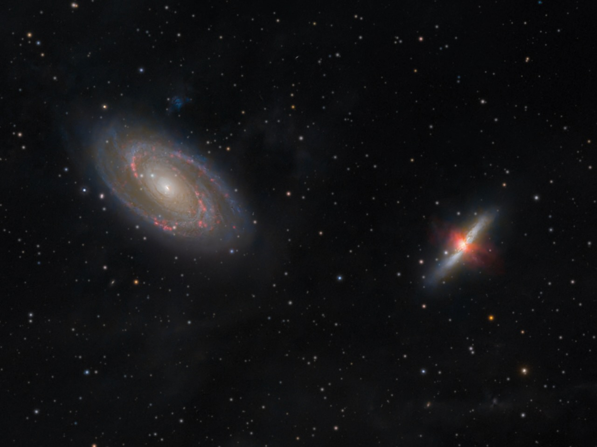
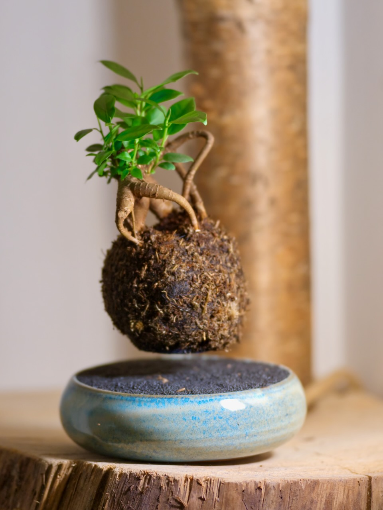
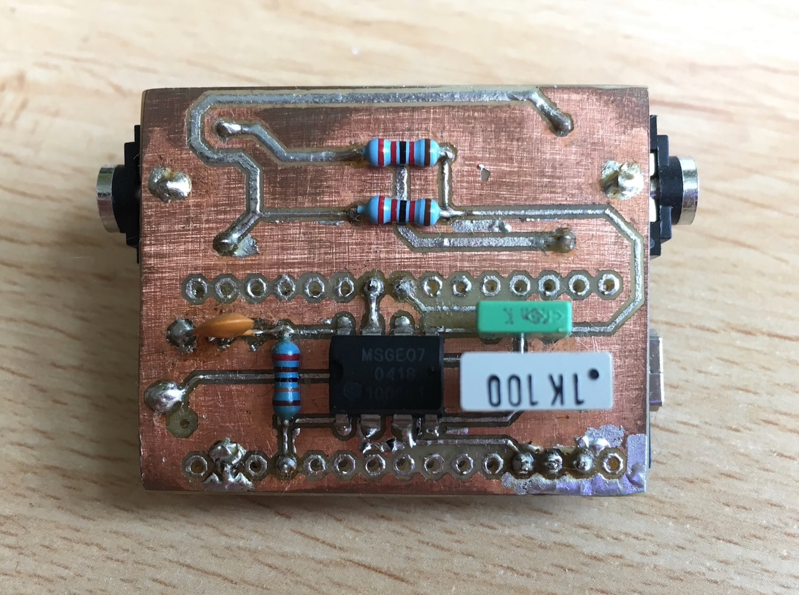

M81 & M82
20h of integration time revailes the fine interstellar dust in our galaxy and also the bipolar outflow of ionized gas from M82.
More details

Floating Bonsai
A Hall effect sensor measures the position of the floating magnet and keeps it centred using an electromagnet controlled by a PID controller. All the electronics are housed in the hand-made base.

Light organ
A DIY etched circuit board designed to control LEDs in time with the music being played. An Arduino measures the signal voltage after low-frequency sounds have been filtered through a low-pass filter.